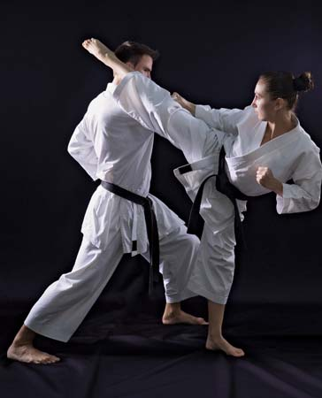

Shirokaze Do Shotokan
Shirokaze Do Shotokan


Shirokaze Do Shotokan Karate Club is owned and run by Paul Drayton.
He can be contacted at the following address:
Sensei Drayton
125 West Haven Road
Cozenbury
Cozchester
CZ14 7RB
e-mail: paul@sensei.coz
The priciples the Shotokan School is based upon the details below.
Never forget: karate begins with rei and ends with rei (Rei means courtesy or respect, and is represented in karate by bowing) There is no first attack in karate Karate supports righteousness First understand yourself, then understand others The art of developing the mind is more important than the art of applying technique The mind needs to be freed Trouble is born of negligence / ignorance Do not think karate belongs only in the dojo Karate training requires a lifetime Transform everything into karate; therein lies its exquisiteness Karate is like hot water, if you do not give it heat constantly, it will again become cold water Do not think that you have to win, rather think you do not have to lose Transform yourself according to the opponent The outcome of the fight depends on one's control Imagine one's arms and legs as swords Once you leave the shelter of home, there are a million enemies Postures are for the beginner; later they are natural positions Perform the kata correctly; the real fight is a different matter Do not forget control of the dynamics of power, the elasticity of the body and the speed of the technique Apply the way of Karate to all things. Therein lies its beauty.